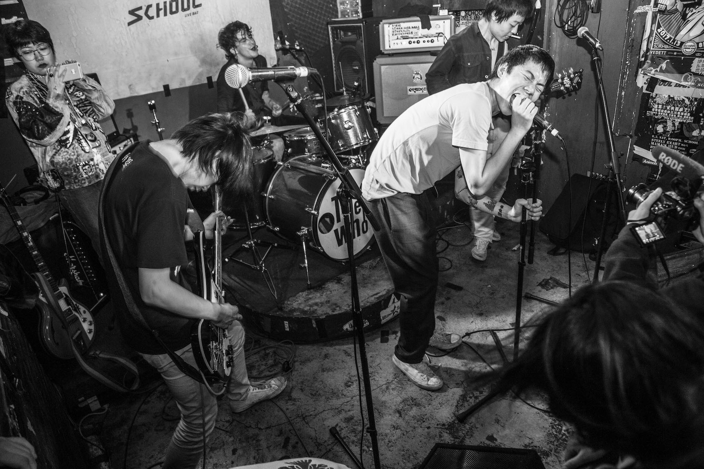

So, What's it REALLY LIKE?
Amazing, raw, vast and varied
Numerous new scenes have cropped up. It's not just Beijing and Shanghai anymore.

Over the last few years scenes have sprang up in:
|
Xiamen |
Dongguan |
Shenyang |
| Numbers of Venues |
+2 |
+3 |
+1 |
| Number of Bands |
+4 |
+2 |
+5 |
| Total Touring bands |
7 |
3 |
2 |
Local acts I've caught even just in short travels:

DIRTY FINGERS
 HIPERSON (海朋森) from Chengdu, Sichuan
HIPERSON (海朋森) from Chengdu, Sichuan